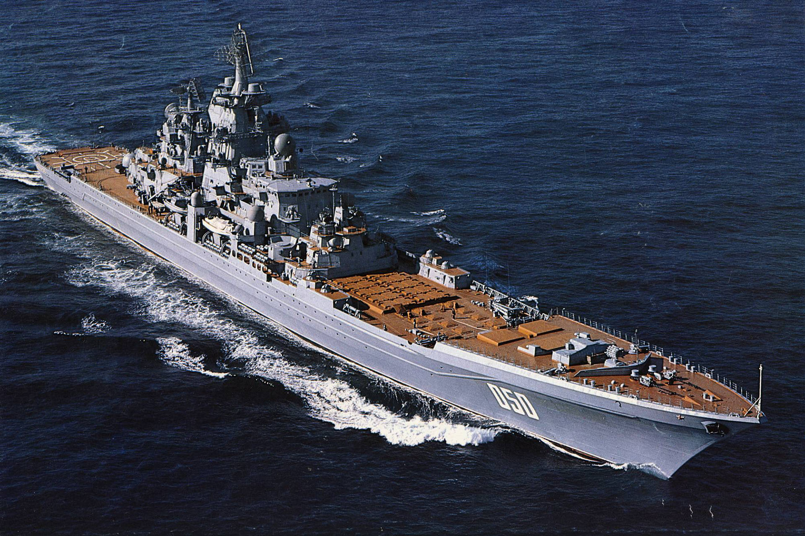

Strona Glowna
Okrety Wojenne

Krazownik Rakietowy Projektowy 1144
Dlugosc: 252 m
Naped:2 reaktory jądrowe wytwarzające parę dla 2 turbin parowych o mocy 70000 KM każda 2 kotły parowe jako napęd pomocniczy